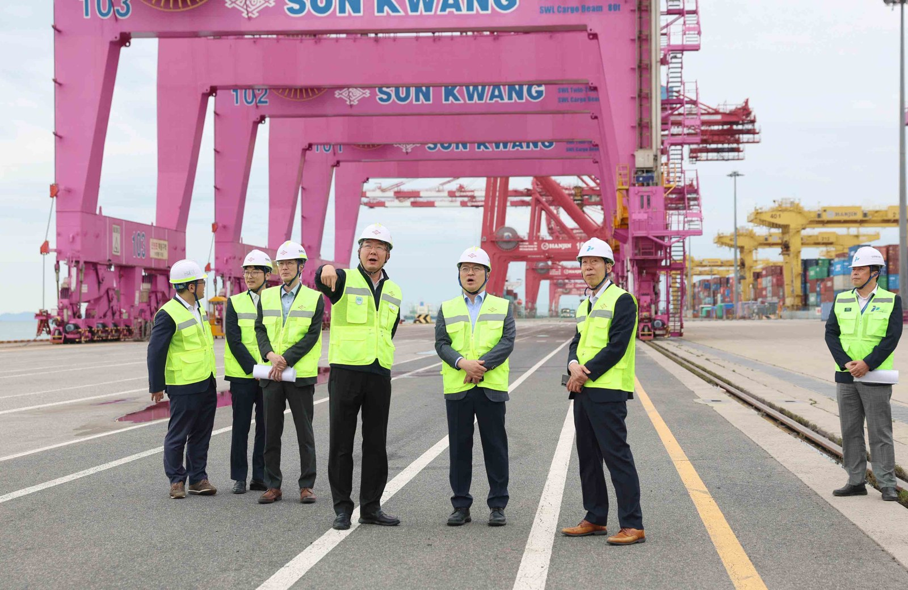
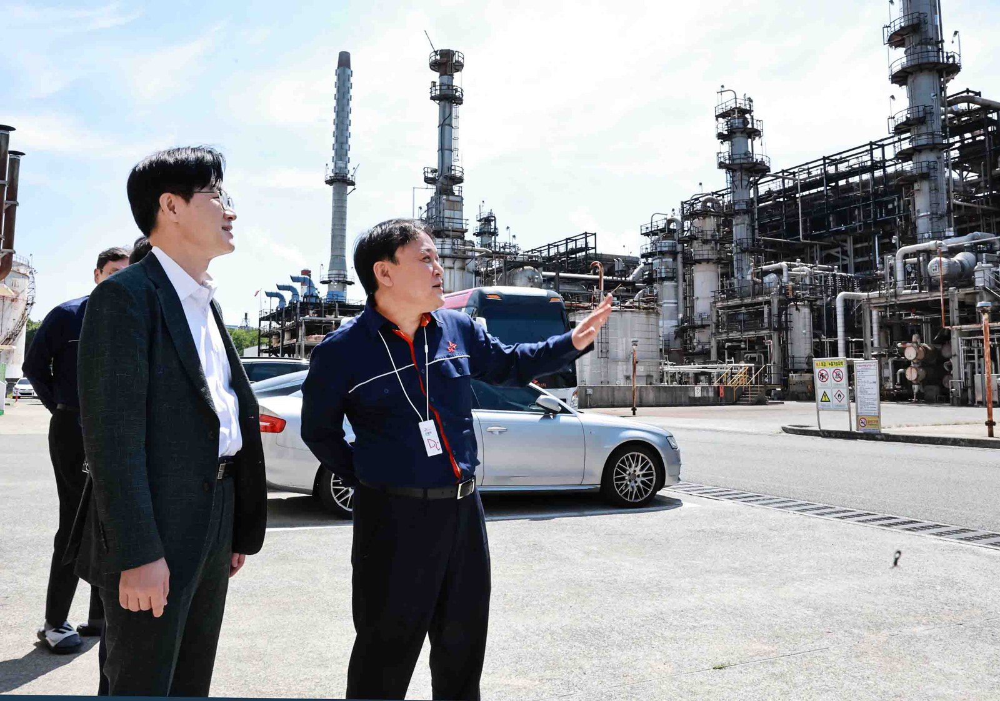

[한국경제 민낯②] 세 전쟁과 수출국 한국
1~10월 수출 9300억달러
반도체 42.2%, 중국·미국 40.2%
호르무즈 통항 65%가량 감소
AI경제저널=김갑봉 기자 | 올해 1월부터 10월까지 한국은 9300억달러(약 1348조원)어치를 팔았다. 1년 전보다 60.6% 늘어 처음으로 9000억달러를 넘었다. 산업통상부가 11월 1일 낸 10월 수출입 동향이다. 관세청 집계로 11월 10일까지 누계는 9637억달러(약 1397조원)다.
미국과 중국은 관세와 수출통제로 무역 전쟁을 벌이다 2025년 11월 서로 유예했다. 올해 11월 9~10일에는 그 유예를 2027년 1월 10일 무렵까지 늘렸다. 미국·이스라엘과 이란의 전쟁으로 이란은 호르무즈 해협을 사실상 막았다. 러시아와 우크라이나는 아직 휴전하지 못했다. 둘째 편은 세 전쟁과 대만해협 위험이 수출국 한국을 어떻게 흔드는지 짚는다.
수출 규모, 2025년 국내총생산의 46%
한국 수출은 국내총생산의 절반에 가깝다. 한국은행 집계로 2025년 재화와 서비스 수출은 명목 국내총생산의 46.0%다. 기준이 다른 세계은행 집계로는 같은 해 한국 45.8%, 독일 40.4%, 중국 21.1%다.
올해 수출 증가는 반도체가 이끌었다. 10월 반도체 수출은 564억4000만달러(약 75조5000억원)로 1년 전보다 259.4% 늘었다. 1월 1일부터 10월 25일까지 반도체 몫은 42.2%로 지난해 연간 24.4%보다 크다. 10월 한 달 몫은 49.0%, 11월 1~10일은 49.7%다.
증가율은 기업 크기에 따라 갈렸다. 국가데이터처와 관세청의 3분기 기업특성별 무역통계에서 대기업 수출은 103.5% 늘었다. 중견기업은 12.8%, 중소기업은 10.7% 늘어 증가율이 1년 전 3분기와 같았다. 수출 상위 10대 기업 몫은 60.9%로 1년 새 20.3%포인트 올랐다.
중국과 미국, 두 시장에 40.2%
1월 1일부터 10월 25일까지 중국 몫은 21.5%, 미국은 18.7%로 둘을 합쳐 40.2%다. 지난해 연간 35.7%보다 크다. 패권을 다투는 두 나라가 같은 물건을 산다. 10월 1~25일 대중국 반도체 수출은 148억달러(약 19조8000억원)로 331% 늘었다. 같은 기간 대미국 반도체 수출은 58억달러(약 7조8000억원)로 497% 늘었다.
관세는 품목별로 대미 수출을 갈랐다. 지난해 1월부터 12월 25일까지 대미 반도체 수출은 30.0% 늘었다. 관세가 붙은 자동차는 13.5%, 철강은 17.7% 줄었다. 산업통상부는 지난해 대중국 수출이 1.7% 준 까닭으로 중국의 중간재 자급과 한국 기업의 해외 생산기지 다각화를 들었다.
한국은행은 2023년 2월 이슈노트 「향후 글로벌 공급망 리스크와 시사점」에서 대중 수출이 막힐 때 생기는 손실을 추정했다. 미중 갈등으로 대중 수출이 제약되면 품목 범위에 따라 총수출은 단기에 1.0~1.7%, 국내총생산은 0.1~0.3% 줄어든다는 결과다. 보고서는 한국이 핵심 품목 노출과 원자재 수입 의존이 커 영향이 상대적으로 클 수 있다고 적었다.

호르무즈 사실상 봉쇄와 10월 두바이유 배럴당 110.7달러
한국시간 2월 28일 오후 3시 미국과 이스라엘이 이란을 쳤다. 3월 1일 호르무즈 해협이 봉쇄됐다. 봉쇄 직전 해협을 빠져나온 마지막 유조선이 3월 20일 국내에 들어온 뒤 4월 1일 기준 열흘 넘게 호르무즈발 원유 도입이 끊긴 상태였다.
한국석유공사 통계로 2025년 원유 수입 물량의 69.1%가 중동산이다(연구소 계산). 정부는 3월 11일 국제에너지기구 공동행동에 맞춰 비축유 2246만배럴을 풀기로 했다. 1990년 걸프전 494만배럴 이후 가장 많다. 산업통상부는 5월 28일 자료에서 중동산 원유 도입 비중이 50% 수준으로 내려갔다고 밝혔다.
전쟁은 아홉 달이 다 돼 간다. 6월 파키스탄이 중재한 60일 휴전은 8월 평화 합의 없이 끝났다. 유엔은 11월 13일 안전보장이사회 회의를 전하며 호르무즈 통항량이 전쟁 전보다 65%가량 적다고 밝혔다. 영국 해사무역작전센터 집계다.
산업통상부 집계로 두바이유는 지난해 10월 배럴당 65.0달러(약 8만7000원)에서 올해 10월 110.7달러(약 14만8000원)로 70.4% 올랐다. 10월 석유제품 수출은 물량이 7.5% 줄었지만 단가가 94.5% 올라 80.0% 늘었다. 석유화학도 중동 전쟁과 정기 보수로 물량이 6.8% 줄었지만 금액은 27.5% 늘었다.

우크라이나와 대만해협, 줄어든 길과 위협받는 길
대러 수출은 2021년 99억8000만달러(약 11조4000억원)에서 2025년 40억4000만달러(약 5조7000억원)로 내려왔다. 4년 사이 59.5%가 줄었다(연구소 계산). 산업통상자원부는 2022년 독립국가연합 수출이 준 까닭으로 러시아 현지 자동차 공장 가동 중단과 대러 수출통제를 들었다.
고토 가요코 유엔 유럽·중앙아시아 국장은 11월 9일 안전보장이사회에서 9월 우크라이나 민간인이 적어도 328명 숨지고 2105명 다쳤다고 보고했다. 2025년보다 85% 늘었다는 집계다. 러시아·미국·우크라이나는 11월 10~11일 아부다비에서 만나 포로 교환에 합의했다. 러시아와 우크라이나 발표에 휴전 합의는 없었다.
대외경제정책연구원은 2023년 3월 허재철이 쓴 연구자료 「미중 전략경쟁 시기의 대만 문제와 한국의 경제안보」를 냈다. 대만해협과 부근 바닷길은 한국 해상 운송량의 33.27%를 나른다. 보고서는 이 길이 막히면 주요 자원·제품만 따져도 하루 4452억원의 손실이 난다고 추정했다. 전투가 7~70일 이어지면 전투 기간 손실만 최대 31조원에 이를 수 있다.
한국 수출 최대 10% 감소 추정, 분절화 비용
국제통화기금 연구진은 2023년 1월 토론보고서 「지경학적 분절화와 다자주의의 미래」에서 기존 모형 연구를 모았다. 무역이 쪼개지면 장기적으로 세계 생산이 0.2%에서 최대 7% 줄 수 있다. 기술까지 갈라지면 일부 나라 손실은 8~12%에 이를 수 있다.
한국은행은 2023년 12월 이슈노트 「최근 글로벌 교역환경 변화의 배경과 영향」에서 한국 몫을 셈했다. 블록 사이와 블록 안 장벽이 함께 높아지면 한국 수출은 최대 10% 준다고 추정했다. 블록 안 장벽이 완화되면 감소폭은 3% 중반이다. 보고서는 수출을 다변화하면 얻는 이득도 크다고 평가했다.
곽준희 서강대 교수와 이동재 한국은행 인천본부 과장은 2025년 공동연구에서 그 충격을 항만과 공항별로 쟀다. 정책 불확실성이나 지정학 위험 지수가 1표준편차 오르면 1년 안에 인천항 수출 물량은 최대 6~8%, 부산항은 3~5% 준다고 추정했다. 인천공항은 정책 불확실성 충격에만 반응해 최대 2% 줄었다.
경제안보를 위한 공급망 안정화 지원 기본법은 2024년 6월부터 한국수출입은행에 공급망안정화기금을 두게 했다. 김정관 산업통상부 장관은 10월 실적을 발표하며 많은 중소·중견기업이 주요국의 자국우선주의 강화와 공급망 재편, 중동 불안으로 어려움을 겪고 있다고 했다. 김 장관은 수출 성과를 중소·중견기업까지 넓히겠다고 강조했다.
참고문헌
기관 자료
- "2026년 10월 수출입 동향", 산업통상부 보도자료, 2026.11.01. 1~4쪽, 8쪽, 13~14쪽, 20쪽, 30~31쪽. https://www.motir.go.kr/attach/down/095a2dda9c864e1d90d751f7668a1117/4b9e478693e904949a18e5ab0b8307e4/9a9db098b587ee18b321c826f3707a49
- "2026년 11월 1일~11월 10일 수출입 현황(잠정치)", 관세청 보도자료, 2026.11.11. https://www.korea.kr/briefing/pressReleaseView.do?newsId=156788682
- "2026년 3분기 기업특성별 무역통계(잠정) 결과", 국가데이터처·관세청 보도자료, 2026.11.10. 1쪽. https://www.korea.kr/briefing/pressReleaseView.do?newsId=156788566
- "2025년 연간 및 12월 수출입 동향", 산업통상부 보도참고자료, 2026.01.01. 10쪽. https://eiec.kdi.re.kr/policy/materialView.do?num=275598
- "2022년 연간 및 12월 수출입 동향", 산업통상자원부 보도자료, 2023.01.01. 부록 지역별 수출, 독립국가연합 해설. https://www.motir.go.kr/attach/down/095a2dda9c864e1d90d751f7668a1117/130aeca397d39a1d35dae3114fa51d01/9a9db098b587ee18b321c826f3707a49
- "미국-이스라엘, 이란 타격에 따른 석유·가스 수급 영향 긴급 점검", 산업통상부 보도참고자료, 2026.02.28. https://www.motir.go.kr/attach/down/095a2dda9c864e1d90d751f7668a1117/fb238aaca36bc9b7d742ad165b6fc9bd/9a9db098b587ee18b321c826f3707a49
- "한국, 국제에너지기구(IEA) 국제공조 동참, 비축유 2,246만 배럴 방출키로", 산업통상부 보도참고자료, 2026.03.11. https://www.motir.go.kr/attach/down/095a2dda9c864e1d90d751f7668a1117/c18c7c23a08e64f0c6504f952098ff7d/9a9db098b587ee18b321c826f3707a49
- "원유 자원안보 위기경보 '경계' 격상", 산업통상부 참고자료, 2026.04.01. https://www.motir.go.kr/kor/article/ATCL3f49a5a8c/171679/view
- "위기는 철저히 관리, 성장의 기회는 과감히 선점 - 국민주권정부 출범 1주년 산업·통상·자원 분야 주요성과", 산업통상부 보도자료, 2026.05.28. https://www.motir.go.kr/attach/down/e258a4a9a6760923ac9cd310f7a71e4c/811e529107b8a6eb4ec153f8adecc05c
- "원유수입(대륙별) 2021년~2025년", 한국석유공사 페트로넷 석유통계, 열람 2026.11.17. 통계 → 원유수입(대륙별), 연 단위. 2025년 중동 7억1090만7000배럴, 합계 10억2844만4000배럴. https://www.petronet.co.kr
- "주요지표(연간지표) 재화와 서비스의 수출(통계표 200Y101)", 한국은행 경제통계시스템, 열람 2026.11.17. https://ecos.bok.or.kr
- "주요국 통화의 대원화환율 원/미국달러 매매기준율 월평균·연평균", 한국은행 경제통계시스템, 열람 2026.11.17. 통계표 731Y004. 누계는 2026년 1~10월 월평균의 단순평균 1449.77원, 10월 수치는 2026년 10월 1337.66원(두바이유 두 값 모두 이 환율), 연간은 2021년 1144.42원·2025년 1422.22원(본문 원화 환산 기준). https://ecos.bok.or.kr
- "Exports of goods and services (% of GDP)", 세계은행 세계개발지표, 열람 2026.11.17. https://data.worldbank.org/indicator/NE.EXP.GNFS.ZS
- "경제안보를 위한 공급망 안정화 지원 기본법", 국가법령정보센터. 현행 법률 제21207호(2026.06.24. 시행), 최초 법률 제19828호(2023.12.26. 제정, 2024.06.27. 시행) 제38조·제40조. https://www.law.go.kr/LSW/lsInfoP.do?lsiSeq=280361
- "Security Council LIVE: Fragile Gulf calm tested as threats to Hormuz shipping mount", UN News(유엔), 2026.11.13. https://news.un.org/en/story/2026/11/1168804
- "Civilian Toll Mounts in Ukraine as Russian Federation Intensifies Attacks, Senior UN Official Warns Security Council", 유엔 안전보장이사회 제10267차 회의 보도문 SC/16503, 2026.11.09. https://press.un.org/en/2026/sc16503.doc.htm
- "Address by the President of Ukraine to the participants of the 9th European Political Community Summit", 우크라이나 대통령실, 2026.11.12. https://www.president.gov.ua/en/news/zvernennya-prezidenta-ukrayini-do-uchasnikiv-9-go-samitu-yev-107281
- "Presidential Aide Yury Ushakov's commentary following a meeting between Vladimir Putin, US President's Special Envoy Steve Witkoff and Jared Kushner", 러시아 대통령실, 2026.11.12. https://en.kremlin.ru/events/president/news/81252
- "Fact Sheet: President Donald J. Trump Strikes Deal on Economic and Trade Relations with China", 미국 백악관, 2025.11.01. https://www.whitehouse.gov/fact-sheets/2025/11/fact-sheet-president-donald-j-trump-strikes-deal-on-economic-and-trade-relations-with-china/
- "Extension of the Suspension of Expansion of End-User Controls for Affiliates of Certain Listed Entities", 미국 상무부 산업안보국 연방관보 91 FR 70789(문서번호 2026-22793), 2026.11.09. 유예를 2027.01.10.까지 연장. https://www.federalregister.gov/documents/2026/11/09/2026-22793/
- "商务部、海关总署公告2026年第58号 公布继续暂停实施商务部、海关总署公告2025年第55号、56号、57号、58号及商务部公告2025年第61号、62号的决定", 중국 상무부·해관총서, 2026.11.09. 2026.11.11.~2027.01.10. 수출통제 조치 계속 유예. https://www.mofcom.gov.cn/zcfb/dwmygl/art/2026/art_46a13d76cf7243b7af4394ecbdf13b90.html
- "国务院关税税则委员会关于调整对原产于美国的进口商品加征关税措施的公告"(税委会公告2026年第6号), 중국 국무원 관세세칙위원회, 2026.11.09. 대미 추가관세 24% 유예 두 달 연장, 10% 유지. https://gss.mof.gov.cn/gzdt/zhengcefabu/202611/t20261109_4004260.htm
- "Notice of Product Exclusion Extensions: China's Acts, Policies, and Practices Related to Technology Transfer, Intellectual Property, and Innovation", 미국 무역대표부 연방관보 91 FR 72610(문서번호 2026-22925), 2026.11.10. 301조 관세 예외 178건 2027.01.09.까지 연장. https://www.federalregister.gov/documents/2026/11/10/2026-22925/
- 미국 무역대표부, 해운·조선 301조 조치 유예 연장 공고, 연방관보 91 FR 72608(문서번호 2026-22867), 2026.11.10. 유예 2027.01.10.까지. https://www.federalregister.gov/documents/2026/11/10/2026-22867/
연구보고서와 논문
- Shekhar Aiyar 외, "Geoeconomic Fragmentation and the Future of Multilateralism", IMF Staff Discussion Note SDN/2023/001, 국제통화기금, 2023.01. 4쪽, 14쪽 상자 1. 집필자 견해(국제통화기금 공식 견해 아님). https://www.imf.org/en/Publications/Staff-Discussion-Notes/issues/2023/01/11/Geo-Economic-Fragmentation-and-the-Future-of-Multilateralism-527266
- 박경훈·윤용준·강영관 외, "향후 글로벌 공급망 리스크와 시사점", BOK 이슈노트 제2023-4호, 한국은행, 2023.02.07. https://www.bok.or.kr/portal/bbs/P0002353/view.do?nttId=10075454&menuNo=200433
- 윤용준·손민규·남석모·이승호·최준·유지원, "최근 글로벌 교역환경 변화의 배경과 영향", BOK 이슈노트 제2023-36호, 한국은행, 2023.12.27. https://www.bok.or.kr/portal/bbs/P0002353/view.do?nttId=10081381&menuNo=200433
- 허재철, "미중 전략경쟁 시기의 대만 문제와 한국의 경제안보", 연구자료 22-12, 대외경제정책연구원, 2023.03.09. 34쪽(해군 전력분석시험평가단 자문 자료와 미국 전략국제문제연구소 모의전쟁을 바탕으로 한 추정). https://www.kiep.go.kr/gallery.es?mid=a10101030000&bid=0001&list_no=10605&act=view
- 곽준희·이동재, "글로벌 지경학 변화와 인천지역 물류산업에 대한 영향", 한국은행 인천본부 공동연구, 2025.11.28. 2~5쪽. https://www.bok.or.kr/portal/bbs/P0000800/view.do?menuNo=200560&nttId=10094847
사진 출처
- [사진1] 산업통상부, 포토뉴스 「수도권 수출입 관문인 인천신항 현장방문」 사진, 2025.10.09.(등록 2025.10.22.) 공공기관 보도 사진(저작권법 제24조의2). https://www.motir.go.kr/kor/article/ATCLb41cda0c5/28400/view
- [사진2] 산업통상부, 포토뉴스 「울산 SK에너지 공장 현장 방문」 사진, 2026.05.13. 공공기관 보도 사진(저작권법 제24조의2). https://www.motir.go.kr/kor/article/ATCLb41cda0c5/28902/view
관련기사
- [한국경제 민낯①] 사회적으로 생산한 부 — 자산이 일보다 빨리 불어나는 나라, 부는 공정하게 나뉘는가
- 누적 수출 9000억 달러 첫 돌파…인천 비중은 5.1%로 낮아져
- 호르무즈 전쟁보험료, 군함 보낸 나라 배가 3배 문다
- [한국경제 불편한 진실⑳] 수도권·비수도권 — 충남에서 빠져나간 33조원, 서울로 들어온 73조원
저작권자 © AI경제저널 무단전재 및 재배포, AI학습 및 활용 금지